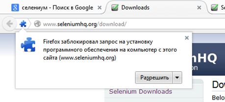
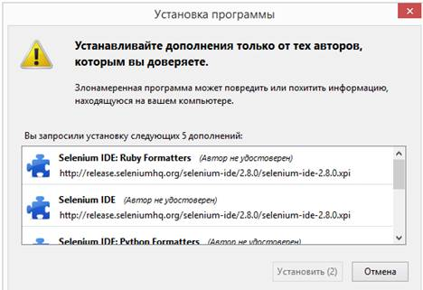
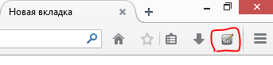
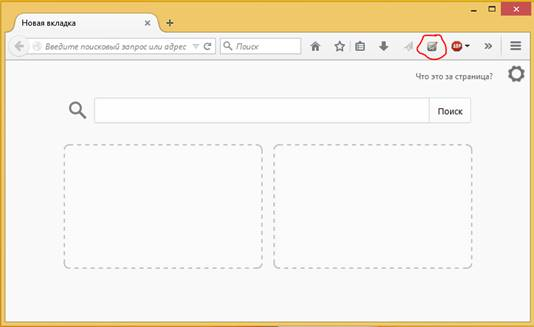
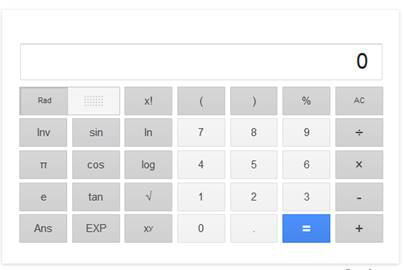
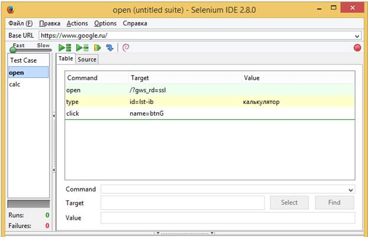
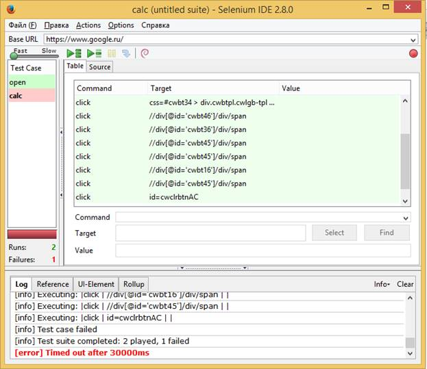

Установка Selenium IDE Plugin для Mozilla Firefox
Цель: Рассмотреть инструментарий приложения Selenium IDE Plugin для браузера Mozila Firefox для автоматизированного тестирования приложений.
Установка Selenium IDE Plugin
Запустите браузер Firefox и скачайте IDE с веб-сайтаSeleniumHQ.
Если вы берете уже ранее скачанный файл ide plugin, то в браузере в строке ввода укажите путь к файлу с расширением .xpi (например, file:///C:/Users/User1/Downloads/selenium-ide-2.8.0.xpi)
Firefox предостерегает вас от установки дополнений с незнакомых ресурсов, потому для продолжения установки нажмите “Разрешить”, как показано на скриншоте.

Далее откроется окно установки дополнения для браузера Firefox.

Выберите “Установить сейчас”. Появится окно дополнений Firefox, сначала оно будет показывать индикатор выполнения, а после окончания скачивания появится сообщение о необходимости перезагрузки браузера. После чего необходимо перезагрузить браузер. После открытия браузера появиться значок на панели инструментов

Чтобы запустить Selenium IDE, просто выберите его на панели инструментов браузера Firefox. Дополнение откроет пустое окно, предназначенное для редактирования тестовых сценариев, а также меню для их загрузки или сохранения.
Задание 1:
Произведите установку Selenium IDE Plugin в браузер Mozilla Firefox
Создание тест-кейсов и тест-планов в SeleniumIDE Plugin
Создание, выполнение и редактирование тест-кейса
Запустите браузер Mozilla Firefox и откройте плагин SeleniumIDE Plugin на панели инструментов. Если его нет, то необходимо включить его в настройках.

Убедитесь, что кнопка записи («record») нажата. Также укажите baseURL «google.com» в нужной строке.
Далее в браузере откройте страницу google.com, и в поисковой строке наберите запрос «калькулятор» и нажмите кнопку поиска. После чего сохраните тест в рабочей папке с названием «open».
Теперь создадим второй тест, который будет непосредственно работать с самим калькулятором. В меню «fail» выберите пункт «New TestCase», после чего убедитесь, что кнопка записи (record) нажата.
Далее перейдите на страницу калькулятора на сайте Google.ru, на странице должен открыться калькулятор следующего вида

Далее самостоятельно произведите сложение, вычитание, умножение и деление в калькуляторе.
Далее останавливаем запись теста нажатием кнопки запись («record»).
После чего сохраните тест с именем «calc», закройте страницу калькулятора в браузере.
Теперь откроем оба теста, для того, чтобы можно было провести несколько тест-кейсов для одной страницы. Для добавления нескольких тест-кейсов воспользуйтесь кнопкой «Add testcase» в меню «file»

Выставить скорость на “slow”, отключить кнопку “запись” если она включена, далее запустить оба теста нажав на кнопку “Запустить все”.
В ходе выполнения теста в браузере должен открыться калькулятор на странице «google.ru», после чего второй тест должен показать ошибку подключения вызванную конфликтом между запущенной страницей и базовым URL-адресом страницы.

После выполнения тестов можно узнать результаты тестирования. В разделе TestCase можно увидеть подсвеченные зеленым цветом удачно пройденные тесты, а красным не пройденные. Ниже указано количество запущенных тестов и количество не пройденных тестов. После чего в разделе Log можно увидеть информацию о ходе выполнения программы, в данном случае программа не может подключиться к странице.
Контрольное задание
Полученный результат продемонстрируйте преподователю.